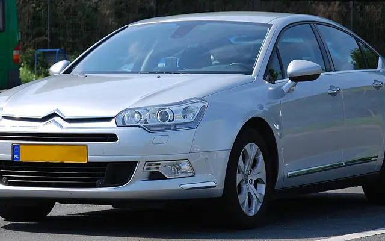

Par Motor › Precios por modelo › Citroën C5 y C5 X
Precio de segunda mano · noviembre de 2026¿Cuánto vale un Citroën C5 y C5 X de segunda mano?

Precio justo estimado de un Citroën C5 y C5 X usado en España, año por año, con los kilómetros normales para su edad y en buen estado: de 5.500 € a 38.200 €. Para tasar el tuyo con sus kilómetros reales y su estado, usa el tasador gratis.
Precios del Citroën C5 y C5 X por año
C5 III (2008–2017)
Precio de nuevo: 1.6 THP 156 CV, 26.000 € · 1.6 HDi 110 CV, 25.000 € · 1.8 125 CV, 23.500 €
| Año | Km normales | 1.6 THP 156 CV · Gasolina | 1.6 HDi 110 CV · Diésel | 1.8 125 CV · Gasolina |
|---|---|---|---|---|
| 2017 | 100.000 km | 11.200 € | 11.900 € | 10.100 € |
| 2016 | 100.000 km | 10.800 € | 11.000 € | 9.700 € |
| 2015 | 100.000 km | 10.300 € | 10.100 € | 9.300 € |
| 2014 | 100.000 km | 9.900 € | 9.300 € | 8.900 € |
| 2013 | 100.000 km | 9.200 € | 8.600 € | 8.300 € |
| 2012 | 100.000 km | 8.500 € | 7.900 € | 7.600 € |
| 2011 | 100.000 km | 7.800 € | 7.300 € | 7.000 € |
| 2010 | 100.000 km | 7.200 € | 6.700 € | 6.500 € |
| 2009 | 100.000 km | 6.600 € | 6.100 € | 5.900 € |
| 2008 | 100.000 km | 6.000 € | 5.600 € | 5.500 € |
Motor con muchos fallos conocidos: se estira la cadena de distribución, acumula carbonilla en las válvulas, consume aceite y falla la bomba de alta presión. Exige un historial de mantenimiento muy completo y escucha el motor en frío.
C5 X (2022–hoy)
Precio de nuevo: 1.2 PureTech 130 CV, 32.000 € · Hybrid (enchufable) 225 CV, 42.000 € · 1.6 PureTech 180 CV, 37.000 €
| Año | Km normales | 1.2 PureTech 130 CV · Gasolina | Hybrid (enchufable) 225 CV · Híbrido enchufable | 1.6 PureTech 180 CV · Gasolina |
|---|---|---|---|---|
| 2026 | 5.000 km | 32.300 € | 38.200 € | 37.400 € |
| 2025 | 20.000 km | 26.900 € | 31.800 € | 31.100 € |
| 2024 | 35.000 km | 24.800 € | 29.300 € | 28.600 € |
| 2023 | 50.000 km | 22.800 € | 26.900 € | 26.300 € |
| 2022 | 65.000 km | 21.000 € | 24.800 € | 24.200 € |
La correa de distribución va bañada en aceite y se degrada antes de tiempo: suelta restos que tapan el filtro de la bomba de aceite y el motor se queda sin engrase, con rotura del motor. También suele consumir mucho aceite y puede fallar la bomba de vacío del freno. Stellantis ha ampliado la cobertura de esta avería para muchas unidades (pregunta en un concesionario con el número de bastidor). Si lo compras, pide las facturas del cambio de correa y de los cambios de aceite con el aceite correcto, y vigila el nivel.
Kilómetros normales: 15.000 al año en gasolina, híbridos y eléctricos, y 20.000 en diésel, con un máximo de 100.000 km (por encima no tasamos: el precio depende demasiado del historial de cada coche). Cifras redondeadas a 100 €.
Preguntas frecuentes
¿Cuánto vale un Citroën C5 y C5 X de segunda mano?
Según el año, la versión y los kilómetros, un Citroën C5 y C5 X usado vale hoy de 5.500 € a 38.200 € en España. El más barato de nuestra tabla es un 1.8 de 2008 (5.500 €) y el más caro un Hybrid (enchufable) de 2026 (38.200 €). Son precios justos estimados entre particulares y profesionales, con los kilómetros normales para su edad y en buen estado.
¿Cuánto valor pierde un Citroën C5 y C5 X al año?
Con unos años encima, un Citroën C5 y C5 X pierde alrededor de un 8 % de su valor cada año (calculado sobre el 1.2 PureTech de la generación C5 X). Los primeros años la caída es mayor y a partir de los 70.000 km se acelera.
¿Qué motorizaciones tiene el Citroën C5 y C5 X?
En nuestra base de datos hay versiones gasolina, diésel y híbrido enchufable, en 2 generaciónes: C5 III y C5 X.
¿Qué motores del Citroën C5 y C5 X dan problemas?
Ojo con el 1.6 THP / Mini Cooper S (motor Prince) (1.6 THP, 2008–2012) y el 1.2 PureTech (correa bañada en aceite) (1.2 PureTech, 2022–2023): son motores con fallos graves y muy extendidos. Antes de comprar uno, pide el historial de mantenimiento y comprueba si ya se hizo la reparación. El resto de motores no tiene problemas fuera de lo normal.
¿Cómo sé si me piden demasiado por un Citroën C5 y C5 X?
Abre el tasador de Par Motor, elige el Citroën C5 y C5 X, el año y los kilómetros reales, y escribe lo que te piden. Te diremos si está por debajo del precio justo (chollo) o por encima (caro). Es gratis y no pide registro ni matrícula.
Otros Citroën
Compara su coste real
El precio de compra es solo una parte. Mira cuánto te costaría al mes con combustible, seguro, neumáticos, mantenimiento y lo que pierde de valor.
Abrir el comparador →